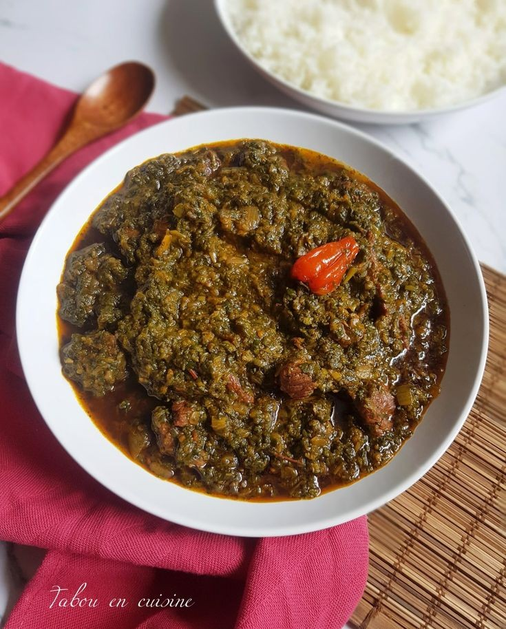

saka saka
Le saka saka est un plat savoureux et nutritif, riche en vitamines et en fibres grâce aux feuilles de manioc.
C'est un plat apprécié pour ses saveurs uniques et sa texture moelleuse.
Ingrédients :
- - 1 kg de feuilles de manioc (frais ou surgelés)
- - 2 oignons
- - 3 gousses d'ail
- 1 poivron
- - 2 tomates
- - 250 ml de lait de coco
- - 1 tasse d'huile de palme rouge (ou une autre huile de cuisson)
- - Sel et poivre au goût
- - Bouillon de poulet ou de poisson (facultatif)
- - Piment (facultatif)
- - Poisson fumé ou viande (facultatif)
Instructions:
Si vous utilisez des feuilles de manioc fraîches, lavez-les soigneusement, puis émincez-les finement ou
pilez-les. Si vous utilisez des feuilles surgelées, laissez-les décongeler et égouttez l'excès d'eau.
- Hachez finement les oignons, l'ail, le poivron et les tomates.
- Dans une grande marmite, faites chauffer l'huile de palme. Ajoutez les oignons et l'ail, puis faites
revenir jusqu'à ce qu'ils soient translucides.
- Ajoutez le poivron et les tomates, et faites revenir quelques minutes.
- Ajoutez les feuilles de manioc préparées dans la marmite et mélangez bien avec les légumes sautés.
- Ajoutez le lait de coco et suffisamment d'eau pour couvrir les feuilles de manioc. Si vous utilisez du
bouillon, vous pouvez l'ajouter à ce stade.
- Laissez mijoter à feu moyen pendant environ 1 heure, en remuant de temps en temps. Les feuilles doivent
devenir tendres et bien cuites.
- Si vous utilisez du poisson fumé ou de la viande, ajoutez-les à la marmite après environ 30 minutes de
cuisson. Assurez-vous qu'ils sont bien immergés dans le liquide pour cuire uniformément.
- Assaisonnez avec du sel, du poivre et du piment selon votre goût. Continuez à mijoter jusqu'à ce que tout
soit bien cuit et que les saveurs se soient bien mélangées.
- Servez le saka saka chaud, accompagné de riz, de plantains frits ou de fufu.